User Guide · Facility Management
DSR Fortune Prime
A comprehensive facility management portal covering attendance, assets, utilities, complaints, and daily operations — built for Indian residential complexes.
Executive Summary
What this portal does
DSR Fortune Prime is a web-based facility management platform covering 10 operational modules. It runs entirely in the browser — no software installation required. The portal is live and ready for your team to use today.
🌐
Live on the internetAccessible at dsr-fortune-prime.vercel.app from any browser. No VPN or special software needed.👤
Login worksTwo demo accounts ready — Facility Manager and Super Admin. Credentials inside this document.📊
10 modules operationalDashboard, Daily Updates, Attendance, Assets, Facility Config, Alerts, Reports, AI Agent, User Management, Biometric.🗄️
Database connectedProduction PostgreSQL database on Neon with 40+ tables, seeded with demo data for all modules.🔔
Smart alertsAuto-generated alerts from real facility data — attendance, asset audits, water quality, expiring contracts.📋
Full audit trailEvery user action — login, create, edit, delete, role change — is recorded with timestamp and IP.
Bottom line: the portal is fully functional with working login, profile management, data entry, alerts, reports, and user administration. Every module loads, every API responds, verified by 34 automated tests.
Demo Access
Try it yourself — 2 demo accounts
The portal is live and accepting logins right now. Each role below has its own demo account.
Web address (share with your team)
https://dsr-fortune-prime.vercel.app
Demo accounts
| Role | Email | Password |
|---|
| Facility Manager | demo@dsrfortuneprime.com | demo123 |
| Super Admin | admin@dsrfortuneprime.com | admin123 |
Note for reviewers: this is a demo environment with sample data. The login page has quick-fill buttons — click any demo account to auto-fill credentials, then click Sign In.
Screen Walkthrough
Login & Authentication
The login page validates credentials before granting access. Wrong email or password shows an error — the form stays until valid credentials are entered.
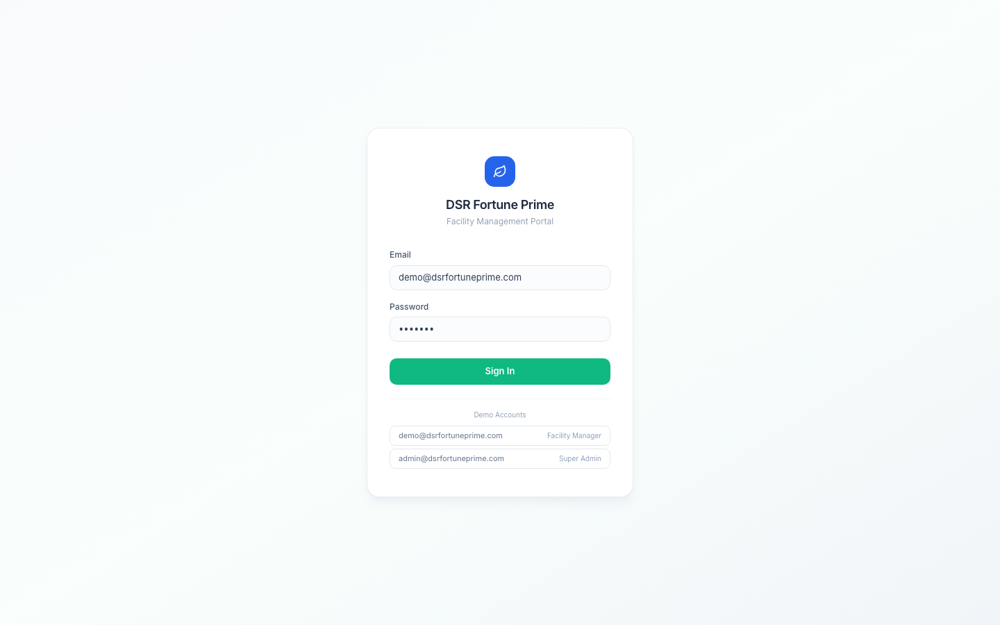
Login page with email/password fields and demo account quick-fill buttons at the bottom.
- Open https://dsr-fortune-prime.vercel.app in your browser.
- Enter your Email and Password (or click a demo account to auto-fill).
- Click the green "Sign In" button.
- On success, you are redirected to the Dashboard.
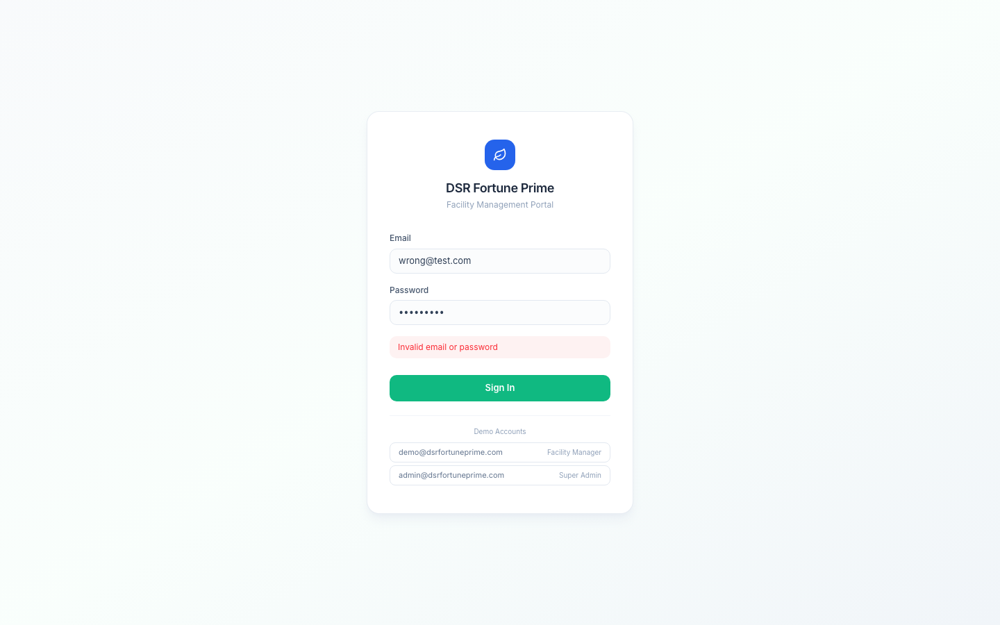
Error state — "Invalid email or password" displayed for incorrect credentials.
Dashboard
Your command center
After login, you land on the Dashboard — a real-time overview across 9 management widgets, 6 KPI summary cards, and a configurable date range picker.
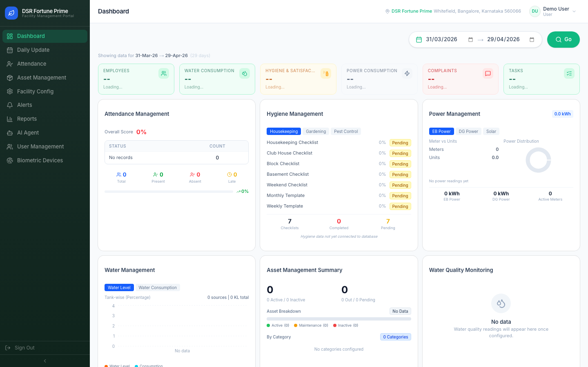
Dashboard showing KPI cards, date range picker, and 9 management widgets: Attendance, Hygiene, Power, Water, Assets, Complaints, Tasks, Vendor Tickets.
KPI Summary CardsSix cards: Employees, Water Consumption, Hygiene, Power, Complaints, Tasks — each showing the headline metric.
Date Range PickerSelect start/end date and click "Go" to filter all dashboard data. Default: last 30 days.
Attendance WidgetOverall score, present/absent/late counts, status breakdown table.
Power ManagementEB/DG/Solar breakdown with meter-wise consumption and distribution donut chart.
Water ManagementTank levels (percentage bars) and daily consumption tracking.
Complaint & Task WidgetsOpen/In Progress/Resolved counts, resolution rates, Eisenhower matrix task classification.
Navigation
Sidebar & profile
The dark green sidebar provides navigation to all 10 modules. Your user profile and Sign Out button are at the bottom. Click your name in the top-right for the profile dropdown.
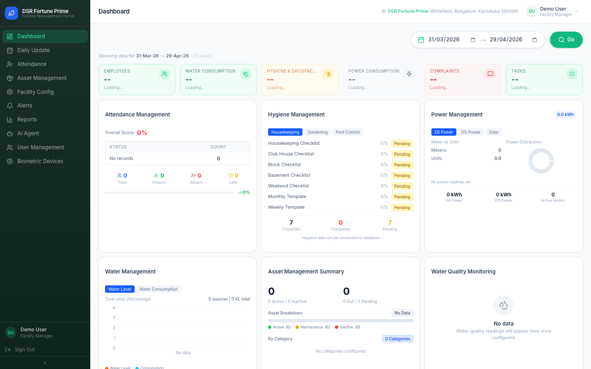
Full sidebar with navigation links, logged-in user info (Demo User / Facility Manager), and Sign Out.
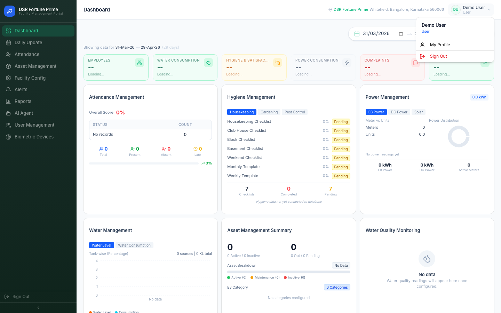
Profile dropdown — user name, email, role, My Profile link, and Sign Out.
My Profile
Personal information & settings
The profile page shows your account details: editable Personal Information, Change Password, and read-only Facility Information.
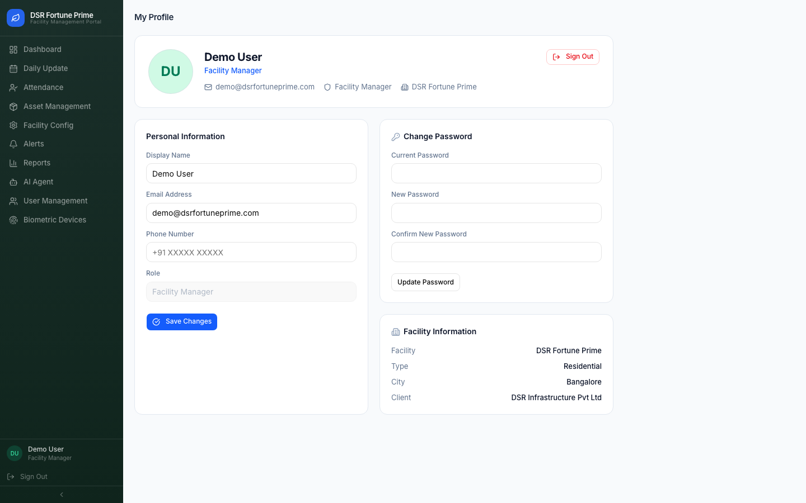
My Profile — edit display name, email, phone; change password; view facility details (DSR Fortune Prime, Residential, Bangalore).
- Personal Information — Edit display name, email, phone. Role is read-only. Click "Save Changes" to update.
- Change Password — Enter current password, new password (min 6 chars), confirm. Click "Update Password".
- Facility Information — Read-only: facility name, type, city, client.
- Sign Out — Available from profile header, sidebar, or profile dropdown (3 locations).
All 10 Modules
Every screen mapped
Below is a walkthrough of each module with screenshots captured from the live production portal via automated browser testing.
1. Daily Updates
Primary data entry for facility staff. 8 tabs: Update (power/water readings), Hygiene, Power, Water, Complaints, Tasks, Projects, Vendor tickets. Enter current meter readings and click "Save Power" or "Save Water".
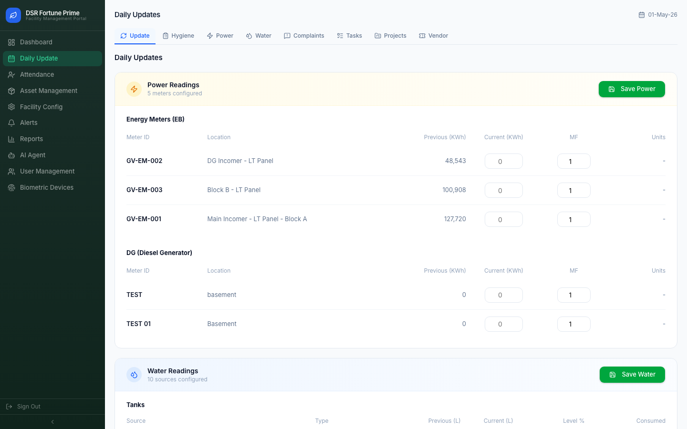
Update tab — Power Readings (EB & DG meters) and Water Readings entry forms.
2. Attendance & Staffing
Workforce management with 9 tabs: Employees, Manual Entry, Attendance, QR Scanner, Staff & Shift, Shift View, Calendar View, Billing, Timesheet. Supports Excel/PDF export and bulk upload.
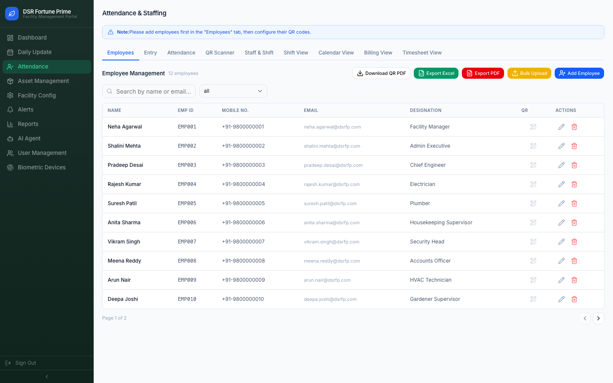
Employee list — name, ID, mobile, email, designation, QR code status, edit/delete actions.
3. Asset Management
Track every physical asset across 9 categories. 8 tabs: Categories, Checklists, Dashboard, AMC Contracts, Breakdown/RCA, Gate Pass, 52-Week PPM, Asset Audit (QR-based scanning).
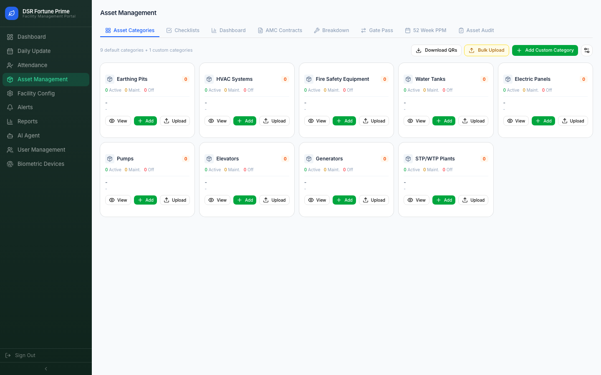
Asset Categories — 9 categories (Earthing Pits, HVAC, Fire Safety, etc.) with View/Add/Upload per category.
4. Facility Configuration
Set up facility details, power meters, water infrastructure, water quality parameters, hygiene templates, shifts, and service providers. 4 tabs: Facility Config, Daily Update, Employee, Service Provider.
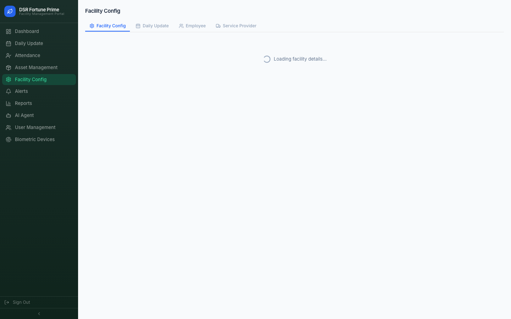
Facility Configuration with tabs for facility details, daily update config, employee settings, and service providers.
5. Alerts & Monitoring
Auto-generated alerts from facility data. Click "Refresh & Generate" to scan attendance, asset audits, water quality, tasks, and AMC contracts. Severity-coded: Critical (red), High (orange), Medium (yellow), Low (blue). Actions: Acknowledge, Dismiss, Resolve.
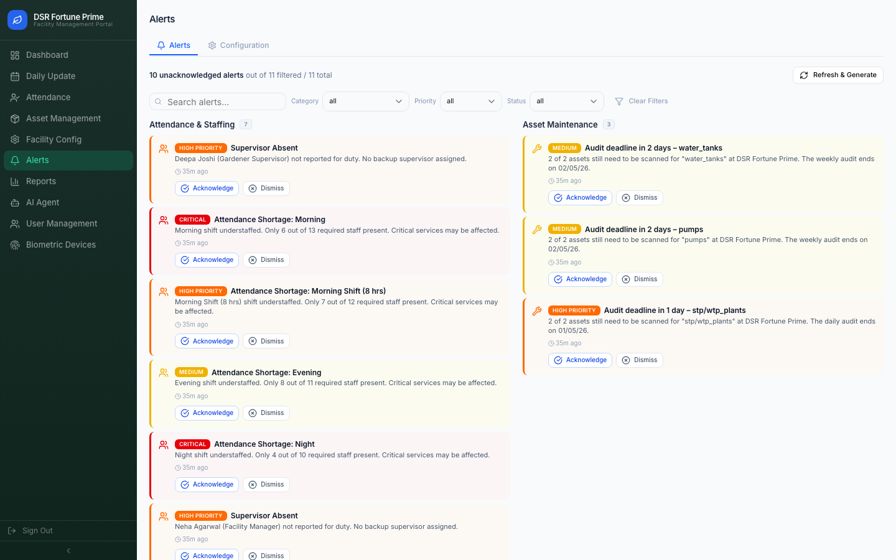
Alerts page — auto-generated alerts grouped by category with severity badges and action buttons.
6. Alert Configuration
Configure categories, attendance/maintenance thresholds, MLSS water quality parameters, audit deadline reminders, and notification channels (Email, SMS, WhatsApp, Push) with per-role toggles.
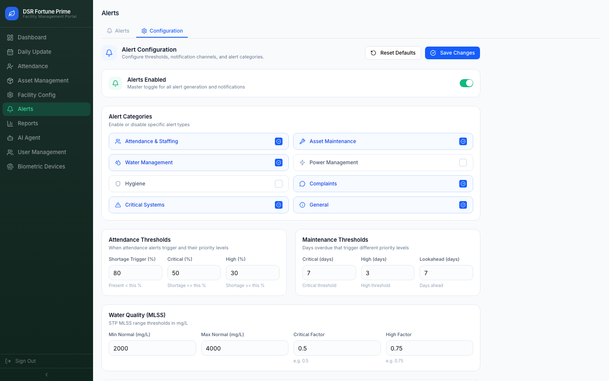
Configuration tab — master toggle, category toggles, thresholds, MLSS parameters, notification channels.
7. Reports & KPIs
KPI Traffic Light Dashboard with 18 metrics across 6 categories (Attendance, Operations, Utilities, Maintenance, Quality, Safety). Green = on target, Red = below. Includes Analytics tab and downloadable PDF reports.
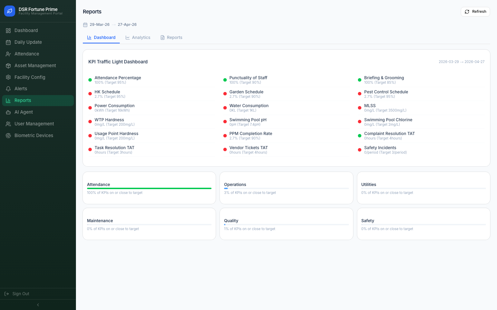
KPI Traffic Light Dashboard — 18 KPIs with values vs targets, plus 6 category progress bars.
8. AI Agent
Conversational AI assistant powered by Google Gemini. Ask questions like "How many complaints are open?", "Which assets have overdue maintenance?", "Generate a water consumption summary for April."
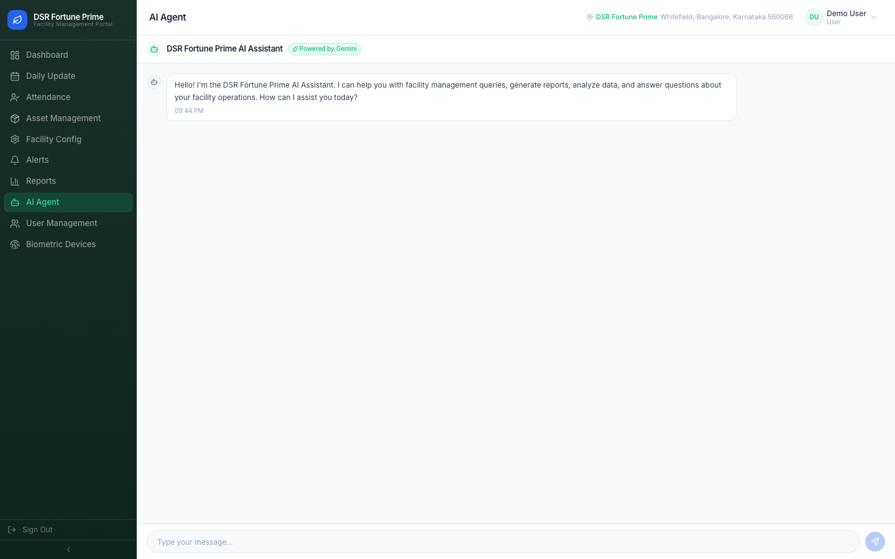
AI Agent chat interface — type questions, receive AI-powered facility insights.
9. User Management
Full CRUD: Create, Edit, Change Role, Activate/Deactivate, Delete users. Searchable table with role/status filters. Click any role name to change it. All actions are logged in the audit trail.
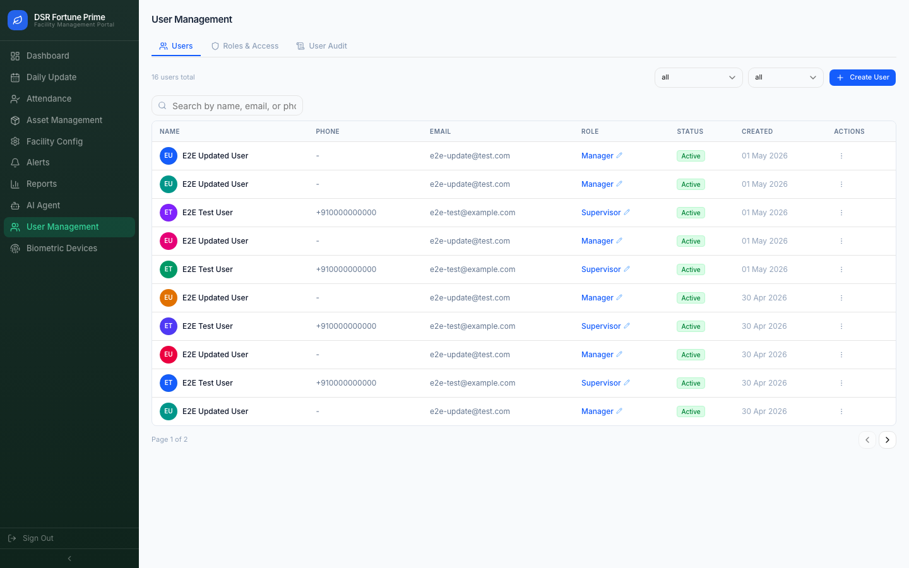
User list — name, phone, email, role (clickable), status, creation date, three-dot action menu.
10. Roles & Permissions
Permission matrix: 11 roles x 9 permissions. Green checkmark = granted, gray X = denied. Admin role is locked. Click any cell to toggle. Purple badges show user counts per role.
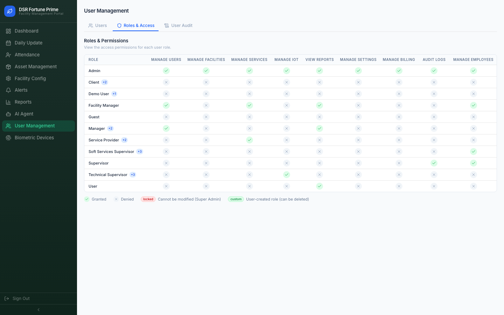
Role-permission matrix — Admin, Client, Facility Manager, Guest, Manager, Supervisor, and more.
11. Audit Log
Chronological log of all user actions: logins, user creation, edits, role changes, deletions. Color-coded action badges. Searchable and paginated (10 per page).
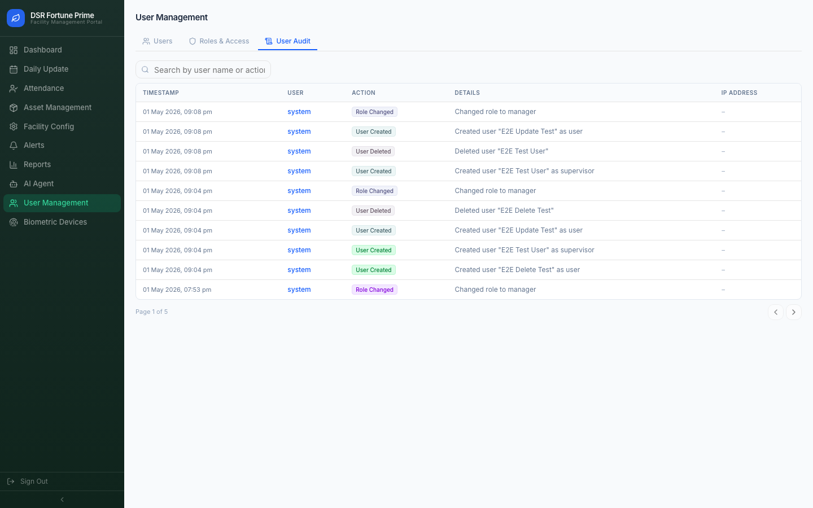
Audit log — timestamp, user, action badge, details, and IP address for each event.
12. Biometric Devices
Register ZKTeco / eSSL biometric terminals, map device users to employees, review unmapped punches. 3 tabs: Devices, Enrollments, Unmapped Queue.
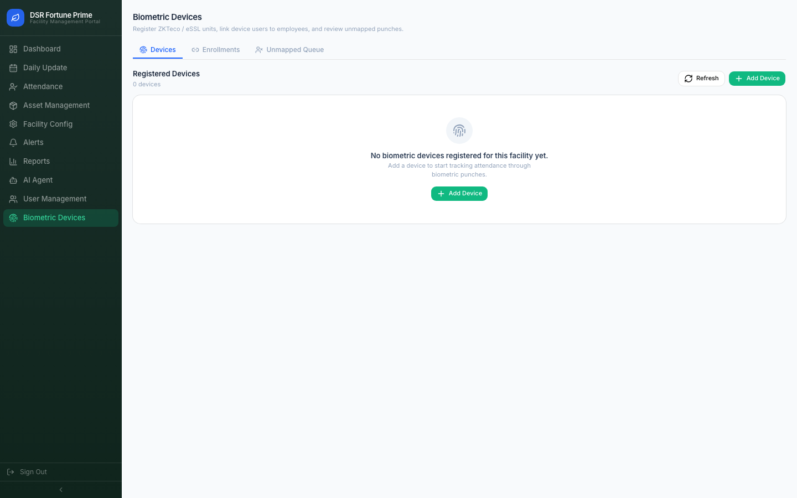
Biometric Devices — device registration with Refresh and "+ Add Device" buttons.
Quick Reference
Module URLs & roles
| Module | Path | Description |
|---|
| Dashboard | /dashboard | KPI overview, 9 management widgets |
| Daily Updates | /daily-updates | Power, water, hygiene readings |
| Attendance | /attendance | Employees, shifts, QR scanner, billing |
| Asset Management | /asset-management | Categories, AMC, PPM, audit |
| Facility Config | /facility-config | Meters, water infra, templates |
| Alerts | /alerts | Auto-generated alerts + configuration |
| Reports | /reports | KPI dashboard, analytics, PDF reports |
| AI Agent | /ai-agent | Gemini-powered chat assistant |
| User Management | /user-management | Users, roles, audit log |
| Biometric | /biometric-devices | Device registration, enrollments |
| My Profile | /profile | Personal info, password, facility |
Sign out locations
- Top-right profile dropdown → "Sign Out"
- Sidebar bottom → "Sign Out" button
- Profile page → Red "Sign Out" button
Verified: 34 automated Playwright tests confirm all pages load, all APIs respond with 200, user CRUD works end-to-end, and no React crashes occur on any page.